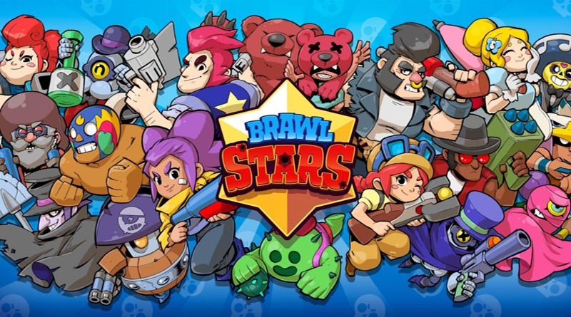
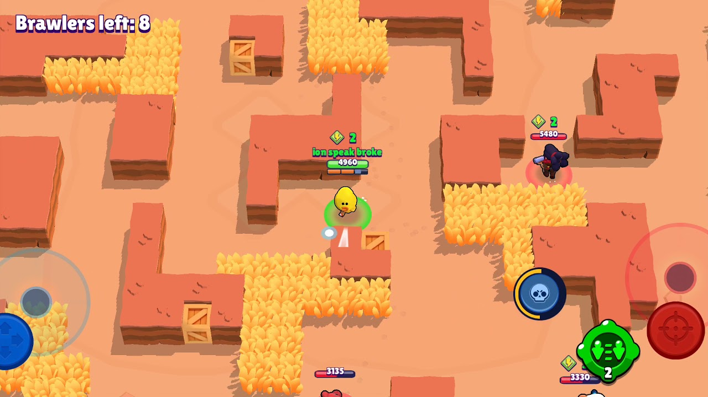
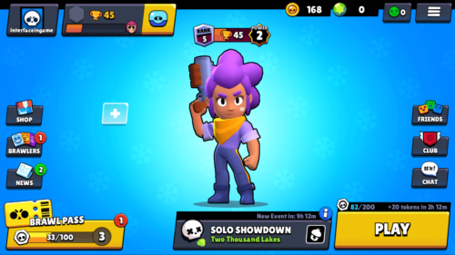
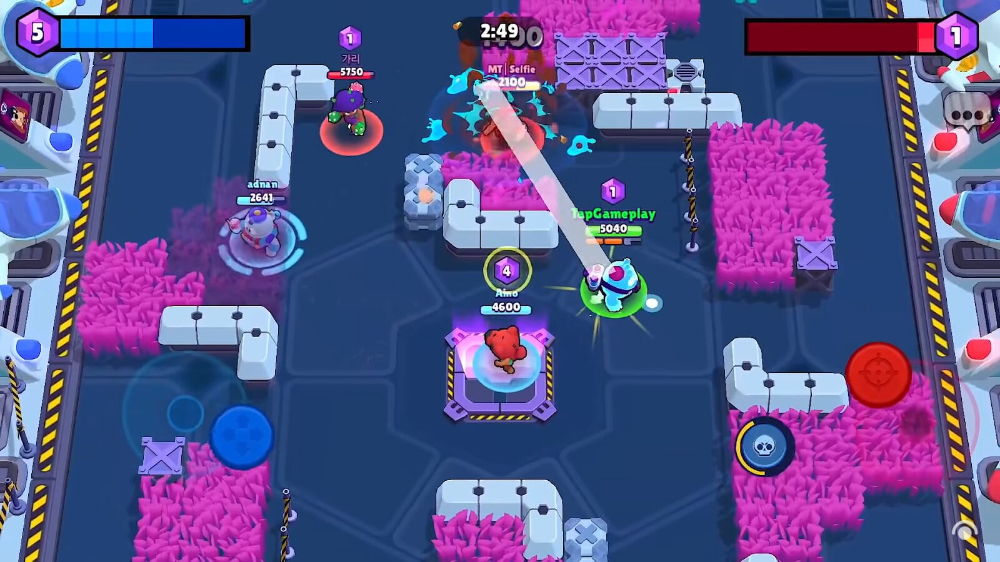
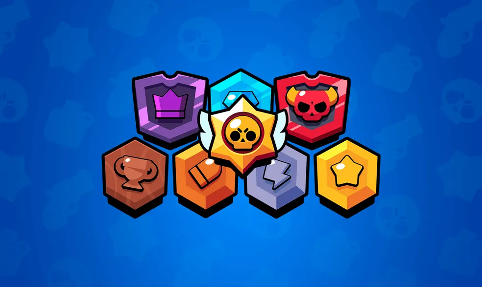

Brawl Stars
   
Lançamento: Novembro de 2018
Plataformas: Android e iOS
Brawl Stars combina uma jogabilidade envolvente com uma grande variedade de modos e personagens, proporcionando uma experiência divertida e desafiadora em dispositivos móveis.
Características Principais
- Modos de Jogo Variados: Oferece uma variedade de modos, como "Showdown", onde os jogadores competem em um battle royale, e "Brawl Ball", um modo de futebol com batalhas.
- Personagens Únicos: Cada "brawler" tem habilidades e ataques especiais distintos, permitindo que os jogadores escolham e personalizem seu estilo de jogo de acordo com suas preferências.
- Progressão e Personalização: Os jogadores podem desbloquear e atualizar brawlers, coletar itens e personalizar suas habilidades para ganhar vantagem nas batalhas.
- Jogabilidade Rápida e Competitiva: As partidas são rápidas e dinâmicas, com foco em estratégia e trabalho em equipe para alcançar a vitória.
- Gráficos e Design: Com uma estética colorida e vibrante, o design visual do jogo é cativante e acessível, atraindo jogadores de todas as idades.